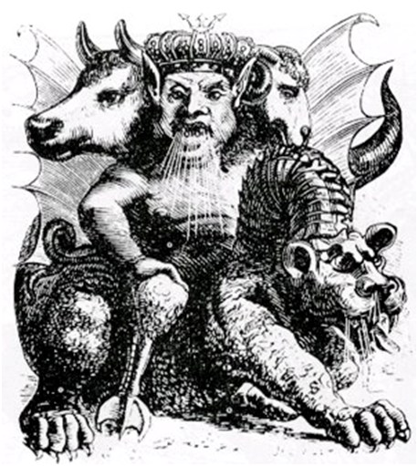
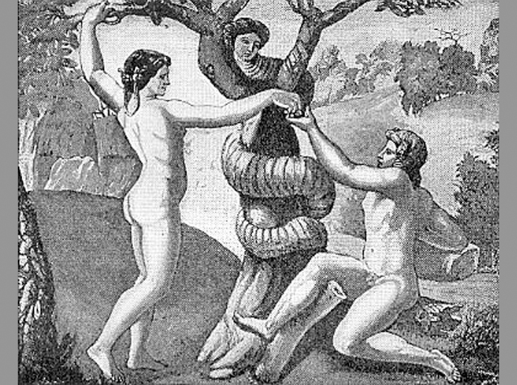

Добро пожаловать в нашу лесную обитель
Надеюсь, вам у нас понравиться=)
Демоны
Как Вы считаете? Как много Вы знаете о Демонах? Задумались? Я тоже задумался, когда впервые столкнулся с этим вопросом. А ведь, в основном, мы имеем не правильное представление о демонах. Спросите почему? Ознакомтесь с этой статьей и вы все узнаете.Демоны бывают как добрые, так и злые. Демон – это дух посредник, между человеком и богом, между потусторонними мирами и земными. Наукой, которая занимается демонами, называют демонологией.
В переводе с греческого термина слово демон произносится как даймон, тоесть рок, божественная власть, Бог.
Как говорилось выше, демоны могут нести как добро, так и зло. Злобных демонов называют – Какодемоны. Добрых демонов называют – Зудемоны. Добрый демон может стать духом-хранителем. По повериям, если человек имел рядом демона хранителя, то ему всегда сопутствовали удача и успех.
Во все времена люди считали, что маги и чародеи имели власть над демонами. Даже считалось, что если чародей изгнал демона из человека, то он автоматически получал власть над изгнанным демоном.
С развитием христианства, все демоны стали считать злыми. Так как верили, что они являются посредниками Дьявола. По учениям христианства, светлые духи – ангелы, демоны – падшие ангелы, которые последовали за Люцифером, когда он был изгнан с небес. И единственным их предназначением считалось подбивание людей на плохие поступки и разрыв связи между человеком и богом.
В средних веках и в эпоху Ренесанса демонов, как посредников Сатаны, стали ассоциировать с колдунами и ведьмами.
Лишь в 100-400 г. нашей эры, стала появляться классификация и систематизация демонов. Христианские специалисты по демонам XVI и XVII веков дали перечни демонов по их иерархии в аду. В то время считалось, что Демон представлял определенную народность мира. Йоганн Вейер составил наиболее полную иерархию демонов. Было подсчитано, что общее количество демонов составляет 7.405.926 рядовых духов. Все они были под командованием 72 князей тьмы. В книгах церемониальной магии, есть своя иерархия, в которой среди самых могущественных демонов:
Асмодей

Считалось, что это демон разврата, мстительности, ревности, злобы. Который всегда стремился вносить раздор между супругами. Он разрушал молодые семейные пары, склонял мужчин к измене. Асмодей входит в число демонов, часто овладевающих людьми. Считается, что он один из самых злобных демонов сатаны. Внешний вид суди из описаний, представляет, что Асмодей имеет три головы: барана, человека-людоеда, быка. Вместо ног, петушиные лапы и крылья. Ездит верхом на огнедышащем драконе. Этот образ уходит очень далеко во времена Персии. Образ ассоциировался с демоном Айшма. В древности еврее считали родителями Асмодея – Наама и Шамдон. Об Асмодеи немного сведений. Считалось, что Асмодей был одним из серафимов. Приближенных в господу Богу. И после попавшим под немилость. Из других источник, считалось, что Асмодей был мужем Лилит, демона похоти. В Легендах сказано, что Асмодей отпрыск Лилит и Адама. В средних веках говорили, что все ведьмы были в подчинении Асмодея, а маги всегда призывали его на помощь. В советах чернокнижников было сказано, что обращаться необходимо к Асмодею с непокрытой головой, в знак уважения его могущества. Вейер считал Асмодея управляющим игорными домами.
Астарот
Он же Аштарот. Демон обладает мужскими свойствами. Эволюционировал из богини плодородия Астарты. Он покровительствует ученым. Знает секреты прошлого, настоящего и будущего. К демону Асторату взывают во время некромантических ритуалов, предсказывая будущее. Асторат появляется в виде Ангела с человеческим обликом. Из разных источников говорится разное. Будто он уродлив или наоборот. Но все равно он вестник зла. Вейер говорил, что Асторат – великий князь ада, под началом которого 40 легионов демонов. По другим источникам. Асторат – один из верховных демонов ада.
Ваал
Таким именем назывались божества Сирии и Персии в древности. Но Ваал был богом сельского хозяйства и плодородия. Являлся сыном Эла, верховного божества Ханаана и властителем жизни. Ваал управлял циклами возрождения и смерти. Жители Ханаана поклонялись Ваалу и приносили в жертву детей. Бросая их в огонь. В Христианстве Ваал был аналогично трехглавым. В центре была человеческая голова. По бокам голова кошки и голова жабы. Ваал умел наделять как мудростью, так и проницательностью.
Вельзевул
Считался повелителем мух. Был князем демонов исходя из древнерусских верованиях. Имел огромную власть, которую приписывали ему в средние века. Чародеи, которые взывали его, рисковали умереть от удушья или апоплексии. После того как он появился, Его было очень трудно прогнать. Вельзевул всегда появлялся в образе гигантской уродливой мухи. Вельзевул управлял шабашами ведьм. Которые воспевали его во время ритуальных плясок.
Велиал
Называется по разному Белиал, Белиаль, Велиар. В переводе, суета, ничто, не Бог. Является одним из самых сильным демонов Сатаны. Велиал всегда представляется людям в прекрасном обманчивом облике. Речь его приятна на слух. Велиал всегда вероломен и лжив. Он подбивает людей на совершение греховных поступков. Особенно на сексуальные извращения, прелюбодеяние и похоть. Иудеи в древности, считали, что Велиал был создан сразу после Люцифера и всегда имел злую сущность от рождения. Был первым поднявшимся против Бога. После изгнания с небес, стал воплощением зла. Вейер полагал его командующим 88 легионами демонов. В каждом из легионе было по 6666 демонов. Был представителем дьявольских войск в Турции. При вызове Велиала, необходимо было приносить жертву. Велиал часто нарушал обещания. Если кто-то добивался его расположения, Велиал щедро вознаграждал за это.
Лилит

«Ибо до Евы была Лилит»,— гласит древнееврейский текст. Легенда о ней вдохновила английского поэта Данте Габриэля Россетти (1828—1882), и он написал поэму «Райская обитель». Лилит была змея, она была первой женой Адама и подарила ему
Существ, что извивались в рощах и в воде,
Сверкающих сынов, блестящих дочерей.
Еву Бог создал потом; чтобы отомстить женщине, жене Адама, Лилит уговорила ее отведать запретный плод и зачать Каина, брата и убийцу Авеля. Такова первоначальная форма мифа, которой следовал и которую развил Россетти. В течение средних веков под влиянием слова «лайил», что на древнееврейском означает «ночь», легенда приняла другой оборот. Лилит стала уже не змеей, а духом ночи. Иногда она — ангел, ведающий рождением людей, иногда демон , который осаждает спящих в одиночку или бредущих по дороге одиноких путников. В народном воображении она предстает в виде высокой молчаливой женщины с длинными черными распущенными волосами.
Люцифер
Наконец-то дошли и до него. В переводе Люцифер звучит как Несущий свет. В самом начале ассоциировался с утренней звездой. В иерархии демонов Люцифер был императором Ада и стоит над Сатаной, одним из его наместников. Призывая заклинаниями Люцифер появляется в образе прекрасного ребенка. Люцифер правит европейцами и азиатами.

|
.jpg)
|